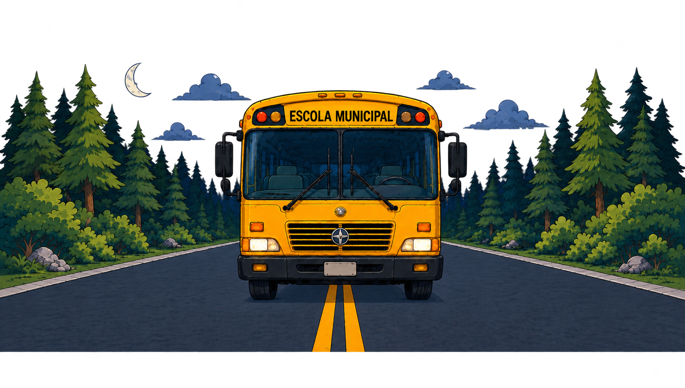

🔎 Quebra - Caso 🔎
Mistério da Floresta

⚙️ Opções
Prepare-se para a aventura!
A história está apenas começando...
O começo da história
A turma do 5º ano está pronta para uma emocionante excursão na Floresta dos Pinheiros!
Entre trilhas, riachos e grandes árvores, eles vão aprender sobre a natureza e viver momentos inesquecíveis.
Mas nem tudo será tão simples... alguém não quer que essa aventura aconteça.
Você está pronto para desvendar esse mistério?

Seus objetivos
- 🔍 Explorar a floresta e seguir as pistas.
- 🧠 Resolver desafios usando lógica.
- 💜 Demonstrar empatia e fazer novas amizades.
- 📖 Descobrir o segredo do Sr. Silvestre e encontrar o diário perdido.
Quebra-Caso
Mistério da Floresta
Fase 1
Estrada Interrompida
O enredo
O ônibus escolar ficou atolado a caminho do acampamento. O Sr. Silvestre bloqueou a passagem com galhos, troncos, pedras e lama.
O que deve ser feito
- Decomposição: divida o problema em partes menores.
- Algoritmo: organize as ações na ordem correta para liberar a passagem.
Arraste os cartões para a ordem correta:
Ações disponíveis:

Estrada liberada!
O ônibus pôde seguir viagem até o acampamento.
Fase 2
O Fantasma
📖 Caderno de Pistas
👣 SE a pegada for de bota, ENTÃO siga em frente.
🎀 SE houver fita amarela, ENTÃO vire à esquerda.
🪵 SE encontrar um galho quebrado, ENTÃO vire à direita.
🦉 SE ouvir o assobio da coruja, ENTÃO pare e observe.
Lupa encontrada!
O caminho até o acampamento está livre outra vez.
Fase 3
Investigação da Cabana
Pistas do caderno
- ☀️ O sol vem antes da 🌲 floresta.
- 🌊 O lago vem antes da 🦉 coruja.
- 🧭 A bússola nunca fica na última posição.
- 🌲 A floresta vem antes da 🧭 bússola.
Organize os itens na ordem correta:
Gaveta destrancada!
Vocês encontraram mais pistas sobre o Sr. Silvestre.
Fase 4
A Grande Busca
Energia
Caminhos errados consomem energia. Se ela acabar, vocês voltam ao início.
Legenda
- 🟢 Caminho seguro
- 🔴 Beco sem saída
- 🔮 Memória do velho (pista)
- 🏆 Tesouro / diário
Parabéns!
Você concluiu a Grande Busca! Uma amizade nasceu. Um legado foi salvo.
Você foi incrível!
- Desobstruiu o caminho
- Seguiu as pistas com lógica
- Desvendou os segredos da cabana
- Encontrou o diário perdido
Vitória de todos!
O Sr. Silvestre não está mais sozinho. Ele encontrou um novo propósito: ensinar, proteger e compartilhar seu conhecimento.
Desfecho
O Guardião Tecnológico
O impacto pedagógico
Com o apoio da escola, Silvestre aprende a usar ferramentas digitais para preservar as memórias do seu avô.
O novo legado
- Líder de Escuradas: ensina às crianças toda a sua sabedoria de campo.
- Conselho Híbrido: ensina os alunos a transformarem dados coletados em rotinas digitais reais de preservação.
Museu digital da floresta
Nenhum problema é grande demais quando dividido em partes, e o conhecimento do passado se torna a tecnologia do futuro quando conectamos gerações com empatia e respeito.
Quebra-Caso
Obrigado pela atenção!
Créditos: Alexandre Fischer Barbosa, Gustavo Henrique Pereira Lima, Igor Damacena, Igor Kenji Tavares, João Paulo Alexandre Nascimento e Vitor Hugo Ataliba